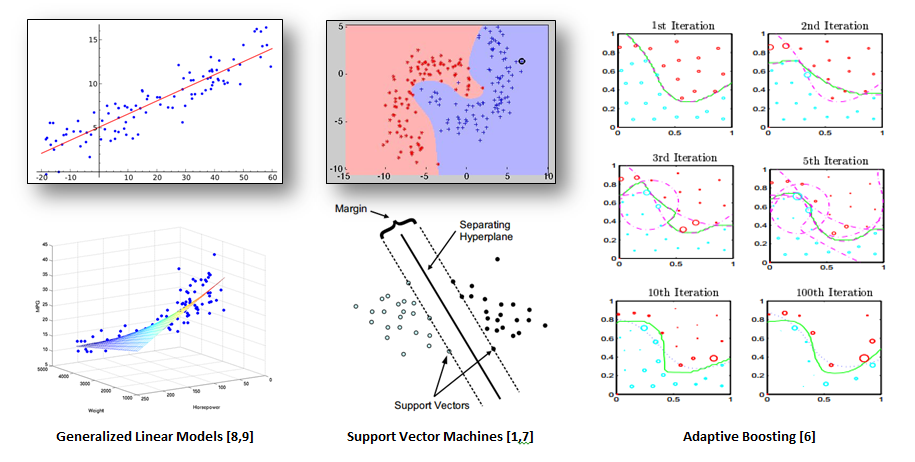
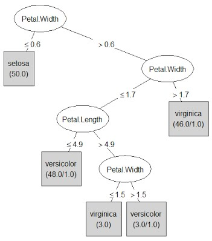
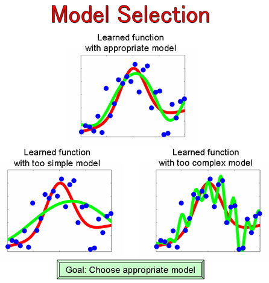

Apache Spark
Casper Koning
May 2016
Follow along
Link to the slides
Contents
Introduction
What is Apache Spark?
Apache Spark™ is a fast and general engine for large-scale data processing.

Why Apache Spark?
- Cluster processing on commodity hardware embracing failure
- Great performance due to in memory processing
- Easy to use
- Rich set higher-level tools for data analysis/processing

How Apache Spark?
- First party support for multiple programming languages:
- Scala (Spark source is also written in Scala)
- Java
- Python
- R
- Integrates with Hadoop ecosystem via YARN
- Has Mesos interoptability
- Can also be ran standalone
Spark Core
Spark architecture model
- Driver Program creates Tasks for the Workers and schedules them on a Worker
- Worker is a node in the cluster that runs processes called Executors
- Executors compute Tasks and communicate with the driver on the progress of said Tasks
- Cluster Manager takes care of resource allocation, i.e. tells the Driver on which Worker nodes Executors can be spawned
- see this glossary for a recap

The Spark Context
The first thing a Spark program must do is to create a SparkContext object, which tells Spark how to access a cluster, and functions as the gateway between the driver and the cluster.
val sparkConf = new SparkConf().setAppName("hello-spark").setMaster(master)
val sc = new SparkContext(sparkConf)- Only one
SparkContextmay be active per JVM. You muststop()the activeSparkContextbefore creating a new one - The
masteris a Spark, Mesos, YARN cluster URL - Setting
master="local"runs in pseudo cluster mode
RDDs
A Resilient distributed dataset (RDD), is a fault-tolerant collection of elements that can be operated on in parallel.
- Distributed:
- Data of a single collection is partitioned and computations are done on these partitions in a distributed fashion over multiple Workers.
- Fault tolerant:
- Spark deals with failing machines by re-executing failed or slow Tasks on other Workers
- When a partition of an RDD is lost, it will simply be recomputed using the original source. It knows how because of the DAG
Creating RDDs
val fromCollectionOnDriver = sc.parallelize(List(1,2,3))
val fromLocalFileSystem = sc.textFile("/directory/*.txt")
val fromHdfs = sc.textFile("hdfs:///directory/*.txt")
val fromS3 = sc.textFile("s3a:///bucket/key-prefix/*.txt")
val wholeTextFiles = sc.wholeTextFiles("/directory/*.txt") // returned as filename-file key-value pairs
val customInputFormat = sc.newAPIHadoopRDD[K, V, F <: InputFormat[K, V]](...)Transformations and Actions
RDDs support two types of operations: transformations, which create a new RDD from an existing one, and actions, which return a value to the driver after running a computation on the RDD.
- transformations are lazy
- actions force computation
- A pipeline of transformations and actions form a DAG
DAG
Example
val rdd = sc.textFile("/this-training.md")
val rddCount = rdd.flatMap(line => line.split("\\s"))
.map(word => word.toLowerCase)
.filter(word => word == "rdd" || word == "rdds")
.count()
println("I keep nagging about RDDs in this presentation, to be precise, " +
"I mention them " + rddCount + " times")Caching
- Sometimes you want to reuse an RDD. By default, this leads to a recomputation of the RDD. This is where caching comes in
- This supports multiple storage levels (
MEMORY_ONLY,MEMORY_AND_DISK,DISK_ONLY, …) - Can also tweak the number of replications of partitions
val rdd = sc.textFile("/path")
val nextRDD = rdd.map(line => line.toLowerCase).cache()
println(nextRDD.filter(line => line.startsWith("a")).count())
println(nextRDD.filter(line => line.startsWith("b")).count())Broadcasts/Accumulators
- Broadcast variable: read-only variable cached on each machine
- Accumulator: Write only variable, which can be updated with associative operations, and queried on the driver
val broadcastVar = sc.broadcast(1)
val accumulatorVar = sc.accumulator(0, "count")
val someRDD = sc. ...
someRDD.map(value => value.toInt + broadcastVar.value)
.foreach(x => accumulatorVar += x)
println(accumulatorVar.value)Developing
- Prototype online with
spark-shell - Write production worthy code with tests, package to JAR and submit to cluster with
spark-submit - Notebooks, e.g. spark-notebook, Zeppelin, Databricks
- Drag and drop tools in development
Testing
Holden Karau has an excellent tiny library for testing Spark applications. Most notably, this provides a SharedSparkContext trait which you can mix in with your test to provide an embedded Spark instance:
class SampleTest extends FunSuite with SharedSparkContext {
test("test initializing spark context") {
val list = List(1, 2, 3, 4)
val rdd = sc.parallelize(list)
assert(rdd.count === list.length)
}
}CODE TIME
- Start up your
spark-shell, and prototype your way to a working Spark program:- Provided is a file containing all works of Shakespeare (
shakespeare.txt) - Perform a word count on the texts, i.e. for every unique word, provide a count of how many times it occurs
- How many words are used only once?
- Which word is used most?
- Try leaving out whitespace and the license, how should you approach this?
- Provided is a file containing all works of Shakespeare (
- Migrate working pieces of code to a Spark program in your IDE (template project)
- Write some tests
- Assemble your JAR,
sbt clean assembly - Submit your JAR to a local pseudocluster using
spark-submit
Spark 2.0
- Starting from Spark 2.0, a new entrypoint is preferred, this is
SparkSession, and it is usually used to create aDatasetinstead ofRDD
SparkSession.builder()
.master("local")
.appName("Word Count")
.config("spark.some.config.option", "some-value").
.getOrCreate()Configuring a job
- Config can be set on
SparkConforSparkSession.builder().config - Config can be passed on as CLI args to
spark-submitorspark-shell - Config can be provided with
conf/spark-defaults.conffile - All available properties
Spark standalone cluster
- Start spark master with
sbin/start-master.sh, this is the Spark resource manager - Start spark slaves with
sbin/start-slave.sh <sparkMaster url>- see logs after executing
start-masterfor proper master url
- see logs after executing
- Additionally, you can call
sbin/start-all.shfrom the master node, provided all nodes have the rightconf/spark-env.shfile and the master has the rightconf/slavesfile
Execution modes
- Application can run in both client mode and cluster mode
- Configurable via
--deploy-mode - During client mode, the driver program runs on the machine submitting the application
- During cluster mode, the driver program also runs within the cluster
- Suitable mode depends on your needs, and also the closeness to the cluster of the machine submitting the application
Monitoring
- Spark UI
- Only during the lifetime of the application
- Available on
<driver>:4040
- Spark History Server
- Uses application logs
- Start with
sbin/start-history-server.sh - Available on
<server>:18080
CODE TIME
- Start up a standalone spark cluster on your machine
- Submit your previous application to this cluster in cluster mode
- Monitor your application
CODE TIME
- Create a new program, which runs at least the following:
class A
sc.paralelize(List(new A)).count()- Change your program to use
SparkSessioninstead ofSparkContext - Now, run
class A
spark.createDataset(List(new A)).count()Spark Streaming
Architecture


DStream
DStream is the basic abstraction provided by Spark Streaming. It represents a continuous stream of data […] Internally, a DStream is represented by a continuous series of RDDs.
Example
val ssc = new StreamingContext(sc, Seconds(2))
val dstream = ssc.socketTextStream("localhost",1234)
dstream
.map(line => toRelevantEntity(line))
.filter(entity => entity.isUseful())
.foreachRDD{rdd =>
rdd.foreach(entity => entity.executeSuperImportantSideEffect())
}
ssc.start()
ssc.awaitTermination()
ssc.stop()Operations on DStreams docs
When working with DStreams, you construct a pipeline of actions/transformations on the underlying RDDs of the stream.

Output operations on DStreams docs
CODE TIME
Set up a simple Spark Streaming program that echoes a word count for every batch of text it receives, every second.
Provided
$ spark-shell
val ssc = new StreamingContext(sc, ???)
val dstream = ssc.socketTextStream("localhost",1234)
...
ssc.start()
ssc.awaitTermination()
ssc.stop()we can (on Linux / OSX) use Netcat, nc, to send data:
nc -lk 1234
hello worldWindowing operations on DStreams docs

- Window length: The duration of the window.
- Sliding interval: The interval at which the window operation is performed.
- These two parameters must be multiples of the batch interval.
CODE TIME
Change your previous program to aggregate all the words from the previous 5 seconds, and output this aggregate every two seconds.
Fault tolerance
A streaming application must operate 24/7 and hence must be resilient to failures unrelated to the application logic. For this to be possible, Spark Streaming needs to checkpoint enough information to a fault- tolerant storage system such that it can recover from failures.
Checkpointing
- Metadata Checkpointing
- Configuration
- DStream operations
- Incomplete batches
- Data Checkpointing
- Saving of the generated RDDs to reliable storage […] intermediate RDDs of stateful transformations are periodically checkpointed to reliable storage to cut off the dependency chains.
Turning on checkpointing
def functionToCreateCtxt(): StreamingContext = {
val ssc = new StreamingContext(...) // new context
val lines = ssc.socketTextStream(...) // create DStreams
...
ssc.checkpoint(checkpointDir) // set checkpoint directory
ssc
}
val context = StreamingContext.getOrCreate(checkpointDir, functionToCreateCtxt _)
context.start()
context.awaitTermination()
context.stop()Create DStreams inside the method: SPARK-13316
Stateful operations
Two methods of interacting with state for PairDStreams (DStream[(K,V)]):
updateStateByKey()
mapWithState()The mapWithState() method should be much more performant, and also allows for more complex functionality but can be somewhat harder to implement (imo).
CODE TIME
- Change your streaming word count program to actually have state
- Kill your application during operation, and see if you can get it back up and running without loss of state
(You no longer need window operations for this)
Receivers
Every input DStream (except file stream) is associated with a Receiver object which receives the data from a source and stores it in Spark’s memory for processing.
Basic Sources
- Socket Streams
- File Streams
- Custom Actor Streams
- Queue RDD Streams (testing)
ssc.socketTextStream(host,port)
ssc.fileStream[KeyClass, ValueClass, InputFormatClass](dataDir)
ssc.actorStream(actorProps, actor-name)
ssc.queueStream(queueOfRDDs)Advanced Sources
- Kafka: spark-streaming-kafka
- Flume: spark-streaming-flume
- Kinesis: spark-streaming-kinesis
- Twitter: spark-streaming-twitter
- ZeroMQ: spark-streaming-zeromq
- MQTT: spark-streaming-mqtt
Require linking with external libs, include in Uberjar
Custom Sources
class MyReceiver(storageLevel: StorageLevel) extends NetworkReceiver[String](storageLevel) {
def onStart() {
// Setup stuff (start threads, open sockets, etc.)
// Must start new thread to receive data, as onStart() must be
// non-blocking.
// Call store(...) in those threads to store received data into
// Spark's memory.
// Call stop(...), restart(...) or reportError(...) on any thread
// based on how different errors needs to be handled.
}
def onStop() {
// Cleanup stuff (stop threads, close sockets, etc.) to stop
// receiving data.
}
}Spark SQL
Overview
Spark SQL is a Spark module for structured data processing. […] The interfaces provided by Spark SQL provide Spark with more information about the structure of both the data and the computation being performed. Internally, Spark SQL uses this extra information to perform extra optimizations.
Dataframe and Dataset
A DataFrame is a distributed collection of data organized into named columns. It is conceptually equivalent to a table in a relational database or a data frame in R/Python, but with richer optimizations under the hood.
A Dataset is a new experimental interface added in Spark 1.6 that tries to provide the benefits of RDDs (strong typing, ability to use powerful lambda functions) with the benefits of Spark SQL’s optimized execution engine.
Example
val sc: SparkContext // An existing SparkContext.
val sqlContext = new org.apache.spark.sql.SQLContext(sc)
val df = sqlContext.read.json("/some_path/people.json")
df.show()
df.printSchema()
df.select("name").show()
df.select(df("name"), df("age") + 1).show()
df.select($"name", $"age" + 1).show()
df.filter(df("age") > 21).show()
df.groupBy("age").count().show()
df.select(avg("age")).show()Spark SQL operations
- Dataset docs, for operations on Datasets
- org.apache.spark.sql.functions, for operations on Columns
- SQL queries for registered tables:
val data = ???
data.createOrReplaceTempView("table")
val df = sqlContext.sql("SELECT * FROM table")`Loading and Saving data
- Default format is parquet
Can be configured:
df.read.format("json").load("input_directory/file.json") df.write.format("json").save("output_directory/file.json")Also supports JDBC
val jdbcDF = sqlContext.read.format("jdbc").options( Map("url" -> "jdbc:postgresql:dbserver", "dbtable" -> "schema.tablename") ).load()- Out of the box Hive with HQL via own DSL
Other datasources via third party plugins
CODE TIME
Start your spark shell with an aditional package for reading CSV:
spark-shell --packages com.databricks:spark-csv_2.10:1.4.0- Some JSON with data on persons is provided. Load in this data, and print its schema
- Select the persons who are active and older than 21, and print only their name and address
- Count the number of persons without friends. For the ones that do have friends, print their names, and their friends
- Some CSV is provided with hashes belonging to each person, indexed by
_id. Load in this data and join it with the previous data - Write the result as CSV to disk
Spark MLlib
Machine Learning Basics
Gather and prepare data
In Data Science, 80% of time is spent on data preparation, and the other 20% is spent on complaining about the need to prepare data.
Select features
In machine learning and statistics, feature selection, also known as variable selection, attribute selection or variable subset selection, is the process of selecting a subset of relevant features (variables, predictors) for use in model construction
- Current age for predicting the probability of ending up in hospital in the coming five years.
- \(\frac{\text{weight}}{\text{length}^2}\) for predicting percentage of body fat.
- You fall in category \(A\), so you are very likely to do \(Z\).
Train a model
 
Select the best model
- Train model with different parameters, compare with some metric 
- Model might be too complex, or too simple
- Evaluate model on some validation set and use cross-validation to find an appropriate model
Predict
MLlib Programming absractions
- (Dense/Sparse) Vector
- LabeledPoint
- Matrix
- Rating
- Model classes
- Pipeline API
(Dense/Sparse) Vector
- A mathematical vector containing numbers
- Both dense and sparse vectors
- Constructed via
mllib.linalg.Vectors - Do not provide arithmetic operations
val denseVec1 = Vectors.dense(1.0, 2.0, 3.0)
val denseVec2 = Vectors.dense(Array(1.0,2.0,3.0))
val sparseVec = Vectors.sparse(4, Array(0,2), Array(1.0, 2.0))LabeledPoint
LabeledPoint: A labeled data point for supervised learning algorithms such as classification and regression. Includes a feature vector and a label.
val lp = LabeledPoint(1,Vectors.dense(3.14,1.68,1.41))Matrix
- Integer typed row and column indices
- Double values
- Different implementations for distribution purposes (RowMatrix, BlockMatric, CoordinateMatrix, …)
- Dense and sparse variants
Rating
Rating: A rating of a product by a user, used in the
mllib.recommendationpackage for product recommendation.
Nothing more than a
case class Rating(user: Long, item: Long, rating: Double)Model classes
- Work on RDD[Vector], RDDLabeledPoint, etc.
- Often follow naming pattern:
With , e.g. LinearRegressionWithSGD. - Either the model follows a builder pattern and has a run() method, or it has static train() and predict() methods:
val points: RDD[LabeledPoint] = // ...
val lr = new LinearRegressionWithSGD()
.setNumIterations(200)
.setIntercept(true)
val model = lr.run(points)val model = DecisionTree.trainClassifier(
input = data,
numClasses = 5,
...)Pipeline api
- Advanced API for chaining machine learning operations in one workflow
- Uses the more advanced DataFrame features compared to RDD’s of simple MLlib abstractions
- Possible pipeline: Automated feature selection -> Model training -> Validation -> Model selection -> Prediction
CODE TIME
- Provided is an arbitrary dataset
- Train a regression model for the first variable, with all other variables as independent variables.
- Evaluate your model!
CODE TIME
- 42,000 drawing of digits
- Given a drawing, predict the written digit
- Classification problem
- Use Decision Tree approach
Spark GraphX
Fundamentals
In the most common sense of the term, a graph is an ordered pair \(G=(V,E)\) compromising a set \(V\) of vertices together with a set \(E\) of edges, which are 2-element subsets of \(V\).
- Graphs are all about relationships between objects
- Vertices are the objects we ware interested in
- Edges describe the relationship between two vertices
- The alternate way of looking at data, allows us to ask different questions much easier. These questions are typically about relationships.
Programming abstractions in GraphX
class Graph[VD, ED]{
val vertices: VertexRDD[VD]
val edges: EdgeRDD[ED]
}
type VertexRDD[VD] = RDD[(VertexID, VD)]
type EdgeRDD[ED] = RDD[Edge[ED]]
type Edge[ED] = (VertexID, VertexID, ED)
type VertexID = LongEdgeTriplet

Constructing a Graph
There are several options for creating a Graph in GraphX:
Graph.apply(vertices, edges)Graph.fromEdges()orGraph.fromEdgeTuples()GraphLoader.edgeListFile()
Example: Maven Dependencies
Data
- Directed graph of Maven dependencies
- Data structure:
???
Thank you!!